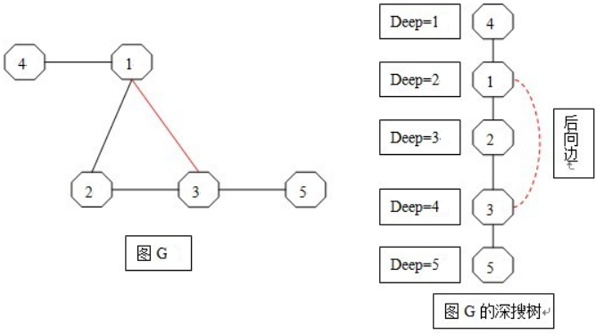
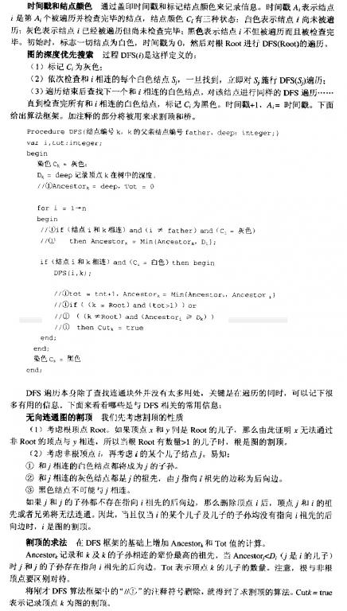

- POJ 1523 - SPF
- Time: 1000MS
- Memory: 10000K
- 难度: 中级
- 分类: 连通分量/割边/割点
问题描述
给定一个连通网络，网络的结点数 <=1000，求出这个网络的所有割点编号，并求出若删去其中一个割点k后，对应的，原网络会被分割为多少个连通分量？
解题思路
首先要明白什么是割点，什么是连通分量。离散数学的知识。
- 【割点】： 在一个无向连通图中，如果有一个顶点集合，删除这个顶点集合，以及这个集合中所有顶点相关联的边以后，原图变成多个连通块，就称这个点集为割点集合。当割点集合的顶点个数只有1个时，该顶点就是割点。
- 【连通分量】： 当删除某个割点后，原图会被划分为若干个互不连通的子图，这些子图就是该割点对应的连通分量。
为了方便下文说明，现在首先说几个小定义:

如左图G结点4开始进行DFS，会得到右边的深搜树，其中红色边在DFS过程中没有经历过，成【后向边】，其他边称为“树边”。
由于DFS有搜索次序，首先被搜索的结点其深度deep也越浅，因此【搜索的深度】也称为【时间戳】。
在深搜树上方的结点，就是下方结点的祖先，显然，【祖先的辈分越高，其深度越浅】。而【后向边】则可用于寻找【辈分更高的祖先】。
此时，我们可以得到割点的定义如下：
若有k的儿子为i，我们定义AnceDeep[i]为结点i辈分最高（深度最浅）的祖先的深度，deep[k] 为k的搜索深度（时间戳），那么k为割点当且仅当k满足（1）（2）中的一个：
- （1）若k为深搜树的根Root，当且仅当k的儿子数（分支数）
>=2时k为割点； - （2）若k为搜索树的中间结点（即k既不为根也不为叶），那么k必然有father和son，若
AnceDeep[son] >= deep[k]，则k必然为割点。
对于（1）是显然的，根结点k一旦有2个以上的分支，那么删除k必然出现森林；
对于（2）比较难理解，首先注意 AnceDeep[son] >= deep[k] 这个条件，意思就是“k的儿子son的辈分最高的祖先（暂且设其为w）的深度，比k的深度要深（或者等于k的深度，此时k就是w），就是说k的辈分比w更高（深度更浅），那么一旦删除k，son所在的网络势必和 k的father所在的网络断开”，那么k就是割点。
当了解了上述知识之后，就可以参考刘汝佳的《算法艺术与信息学竞赛》 P285 所述的求割点的方法。当然你可以用tarjan算法，但是不怎么好理解，初入门的同学我还是建议你先用刘汝佳的方法熟悉一下求割点，再学tarjan算法就不难了。
注意刘汝佳的算法模板中：
- 她的
Ancestor[]就是我上文提及的AnceDeep[] - 她的
D[]就是我上文提及的deep[] - 她的Tot就是我上文提及的son
- 她的deep就是时间戳，即搜索深度，我在程序中定义为depth，DFS时每入栈一次，
depth+1，退栈一次depth-1
下面贴图就是刘汝佳求割点的算法：

求出所有割点后，剩下的就是求出某个割点对应的连通分量数。这个比较好办。首先要明白，因为删除割点后，与该割点相连的边也会被删除，那么割点对应的连通分量数必定小于等于该割点的分支数，这是因为割点的某几个看似互不相连的分支，可能又在什么地方连接起来了。
那么要知道删除某个割点后所得到连通分量数，只需要对原图G所有结点做一个vist标记，初始化为false，割点的vist初始化为true。从割点出发，枚举该割点的所有分支，对每条分支做一次DFS，搜索并标记该分支所在的连通分量上的所有结点。
例如当在DFS第i个割点分支时，vist为false的结点访问并标记为true，vist已经为true的则不可访问，按照这种规律搜索，当返回到割点时，说明该分支所在的连通分量的所有结点已被标记访问。
然后DFS第 i+1 个分支，若该分支结点已经为true，说明它和第i个分支（或此前DFS的某个分支）是在同一个连通分量的，则无需DFS，直接DFS第i+2的分支。
那么需要DFS的分支数就是所求的删除该割点后的连通分量数。
最后建议：
- 用邻接表存储图。
- 注意输入输出格式，尤其是每组数据的“两个空格”和“一个空行”，以免PE。
- 测试数据并所给出的编号并不一定是从编号1开始的，因此一开始就应该开辟1000个（最大结点数）的存储空间，以免RE。
测试数据
- 来源：Greater New York 2000（问题H）
- 下载：download
- 输入：input
- 输出：output
AC 源码
//Memory Time
//280K 0MS
#include<iostream>
using namespace std;
const int size=1001;
struct Node
{
int id; //结点编号
struct Node* next;
};
class solve
{
public:
solve():cases(0)
{
for(int i=0;i<size;i++) //初始化邻接链表链头
ListTable_Head[i]=0;
DFS();
}
~solve()
{
delete[] *ListTable_Head;
}
int min(int a,int b) const{return a<b?a:b;}
bool Input(void); //返回0: 等待下一组输入。 返回1:程序结束
void Insert(int x,int y); //把无向边(x,y)插入邻接表
void DFS(void); //搜索割点及其对应的连通分量数
void DFS_SPF(int k,int father,int depth); //搜索割点。k:当前结点。father:k的父亲结点。depth:搜索深度(时间戳)
void DFS_Subnet(int i); //i为从割点出发的分支,搜索并标记该从该分支出发所能到达的所有node
//（这些node就是一个连通分量）
void Empty(void); //清空邻接表(保留链头并使其指向NULL)
void Del(Node* p); //删除以结点p为链头的整条链(保留链头并使其指向NULL)
protected:
int cases; //案例数
Node* ListTable_Head[size]; //邻接链表链头
int Root; //深搜树的根(搜索起点)
int deep[size]; //结点k的搜索深度deep[k]
int AnceDeep[size]; //结点k及其子孙辈分最高(深度最浅)的祖先的深度AnceDeep[k]
int color[size]; //结点k的颜色color[k]。0:未访问未检查；1:已访问未检查；2:已访问已检查
bool cut[size]; //标记结点是否为割点
bool SPF; //标记网络是否出现割点
int Subnet_Num; //被割点的划分的连通分量的个数
bool vist[size]; //标记访问过的node
};
bool solve::Input(void)
{
int x,y;
for(int i=0;;i++)
{
cin>>x;
if(x==0 && i==0) //程序结束
break;
else if(x==0 && i!=0) //当前case的数据输入完毕
return true;
cin>>y;
Insert(x,y);
}
return false;
}
void solve::Insert(int x,int y)
{
if(!ListTable_Head[x]) //链头不存在，则创建
{
ListTable_Head[x]=new Node;
ListTable_Head[x]->next=0;
}
if(!ListTable_Head[y])
{
ListTable_Head[y]=new Node;
ListTable_Head[y]->next=0;
}
Node* px=ListTable_Head[x];
Node* py=ListTable_Head[y];
Node* tmp;
tmp=px->next; //头插入法
px->next=new Node;
px->next->id=y;
px->next->next=tmp;
tmp=py->next; //头插入法
py->next=new Node;
py->next->id=x;
py->next->next=tmp;
return;
}
void solve::DFS(void)
{
while(Input())
{
SPF=false;
memset(deep,0,sizeof(deep));
memset(AnceDeep,0,sizeof(AnceDeep));
memset(color,0,sizeof(color));
memset(cut,false,sizeof(cut));
/*搜索编号最小的node作为深搜树树的根*/
for(int k=1;k<size;k++)
if(ListTable_Head[k])
{
Root=k;
break;
}
/*寻找所有割点*/
DFS_SPF(Root,Root,1);
cout<<"Network #"<<++cases<<endl;
if(!SPF)
cout<<" No SPF nodes"<<endl;
else
{
for(int i=Root;i<size;i++) //小剪枝，根编号必定是最小的编号
if(cut[i])
{
Subnet_Num=0;
memset(vist,false,sizeof(vist));
vist[i]=true;
/*枚举割点i的所有分支，其中没有访问过的分支则对其逐一深搜*/
/*找出被割点i划分的所有连通分量*/
for(Node* p=ListTable_Head[i]->next;p;p=p->next)
{
if(!vist[p->id]) //分支p->id没有被访问
{ //说明当前分支与前面搜索的连通分量 不连通
Subnet_Num++; //则连通分量数+1
DFS_Subnet(p->id); //搜索并标记该连通分量下的所有node
}
}
cout<<" SPF node "<<i<<" leaves "<<Subnet_Num<<" subnets"<<endl;
}
}
cout<<endl;
Empty();
}
return;
}
void solve::DFS_SPF(int k,int father,int depth)
{
color[k]=1; //染色，结点k已访问未检查
deep[k]=depth; //记录k的搜索深度
AnceDeep[k]=depth; //初始化,k最浅的祖先的深度就是k本身的深度
int son=0; //k的儿子数
for(Node* p=ListTable_Head[k]->next;p;p=p->next)
{
int i=p->id;
if(color[i]==0) //未访问未检查的node
{
son++; //k的分支中，所有未访问未检查的node都是其儿子
DFS_SPF(i,k,depth+1);
AnceDeep[k]=min(AnceDeep[k],AnceDeep[i]); //由于k和其儿子i必然同宗
} //若在i中出现后向边使得i的祖先辈分更高（深度更浅）
//那么k的祖先辈分应该被更新
if(i!=father && color[i]==1) //k的分支中，所有已访问未检查的node都是其祖先
AnceDeep[k]=min(AnceDeep[k],deep[i]); //直接检查祖先辈分（深度）并更新
if((k==Root && son>1) || /*根结点的儿子数(分支数) >1时，则Root必定是割点*/
(k!=Root && AnceDeep[i]>=deep[k])) /*k的儿子i的最大祖先的深度比k的深度要深，则删除k后i与k的father必然断开*/
{
cut[k]=true;
SPF=true;
}
}
color[k]=2;
return;
}
void solve::DFS_Subnet(int cp)
{
for(Node* p=ListTable_Head[cp]->next;p;p=p->next)
{
int i=p->id;
if(!vist[i])
{
vist[i]=true;
DFS_Subnet(i);
}
}
return;
}
void solve::Empty(void)
{
for(int i=1;i<size;i++)
{
if(ListTable_Head[i])
Del(ListTable_Head[i]);
ListTable_Head[i]=0; //保留链表表头并初始化
}
return;
}
void solve::Del(Node* p)
{
if(p->next)
Del(p->next);
delete p;
return;
}
int main(void)
{
solve poj1523;
return 0;
}